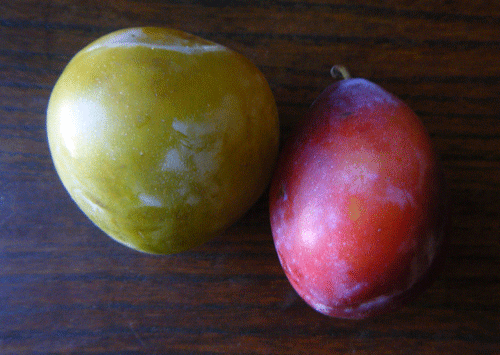
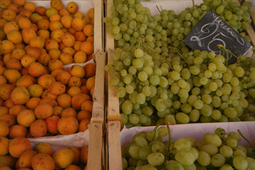

Best in Rome: Plums

Regina Claudia beside Coscia di Monaca
Way back in April I started to write about places around Rome that pleased me. I would like to continue the series, now that my grammar course is nearing a close, with something that’s my favorite wherever there’s freshness: fruit. And more specifically, variety of fruits. Lucky for me, Italy is a cornucopia of freshness in all seasons according to the seasons. Don’t think about peaches in winter; don’t expect oranges in summer. And unlike my native Michigan with its wonderful berries, in summer Rome excels in stone fruits in all varieties.
You would think peaches are only peach in color but not here: they’re also white or yellow. And the plums. I used to think there was only one type and taste of plum: glossy purple on the outside, golden on the inside. Was I wrong! My local fruit vendor on any given day sells at least four varieties, not counting the ones that have a short fruition and then go out. There’s yellow, green, small pink, big pink, familiar round purple, longish purple, longish pink. And I don’t know if its only the Romans who named them thus, but these fruits have catchy names.

Today Mauro was bereft of plums—after all, it’s August—so here’s some grapes and apricots instead.
Regina Claudia: Named after Queen Claudia, this green-on-the-outside, greenish-yellow-on-the-inside plum is a wonder to bite. It has a taste that’s sweet and delicate and so distant from those normal Michigan plums, I have no question why it has been named after royalty. Apparently the Regina Claudia is an old line of plum.
Coscia di Monaca: Named after Monk’s thighs for their unwieldy and generally inelegant shape. A cloudy pink on the outside and toasty yellow on the inside, this plum leans towards bitter more than sweet. They are at their best when they’re hard to bite into.
Sangue di Drago: Take a bite into this plum and you won’t have any questions about how it got its name of dragon’s blood. The inner flesh is bright red in color and tastes as startling as it looks. It has a bright sweetness that doesn’t overwhelm. Outside it’s molted red and green.
Goccia d’Oro: This is as normal as it gets with plums here. Small and usual, the “Drop of Gold” plums’ taste neither sparkles or fails. They can be eaten quickly and abundantly on a hot summer’s day.
If you find yourself near the Colosseum in any month but August, find Via Quattro Santi Coronati and walk in the direction of the church to Mauro’s fruit stand. Buy a bag of plums, if it’s summer, and experience the variety you’ve been missing.
· · · · · · · · · · · · · · · · · · · ·